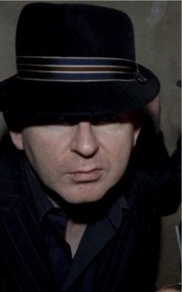

The Beatles splice a live King Lear broadcast into I Am the Walrus
At Abbey Road on September 29, 1967, the Beatles made seventeen new mono mixes of "I Am the Walrus," and on mix 22, John Lennon fed a live BBC Third Programme radio broadcast of Shakespeare's King Lear straight into the mix.
The random lines of dialogue, caught live rather than dropped in later, became one of the strangest and most talked about moments on the entire Magical Mystery Tour soundtrack.
September 29 at a Glance
Tap any event to jump straight to its full card below.
Merle Haggard releases Okie from Muskogee
Capitol Records released Merle Haggard and the Strangers' single "Okie from Muskogee" on September 29, 1969, written in response to the era's Vietnam War protests.
The song spent four weeks at number one on the country chart that November and became one of the decade's defining anthems from the other side of the counterculture divide.
The Doors screen Feast of Friends at Lincoln Center
Members of the Doors attended the New York Film Festival at Lincoln Center on September 29, 1969, for a screening of Feast of Friends, their self produced concert documentary shot on 16mm during 1968 tour dates.
The band spent that same year finishing The Soft Parade, whose single "Touch Me" carried the same restless, unvarnished energy the documentary showed off tour.
Diana Ross and the Supremes debut Love Child on Ed Sullivan
Diana Ross and the Supremes performed their new single "Love Child" live on the season premiere of The Ed Sullivan Show on September 29, 1968, trading their usual gowns for plain sweatshirts and flats.
The stripped down look matched the song's story of inner city hardship, and the single went on to hit number one on the Motown, Soul & R&B chart weeks later.
The Beatles splice a live King Lear broadcast into I Am the Walrus
At Abbey Road on September 29, 1967, the Beatles made seventeen new mono mixes of "I Am the Walrus," and on mix 22, John Lennon fed a live BBC Third Programme radio broadcast of Shakespeare's King Lear straight into the mix.
The random lines of dialogue, caught live rather than dropped in later, became one of the strangest and most talked about moments on the entire Magical Mystery Tour soundtrack.
Mickey Hart joins the Grateful Dead onstage for the first time
24 year old percussionist Mickey Hart played his first full show as a member of the Grateful Dead at San Francisco's Straight Theater on September 29, 1967, sitting in with drummer Bill Kreutzmann for a nearly two hour run through "Alligator."
Hart's addition turned the band into a two drummer outfit, a rhythm setup that shaped the sprawling psychedelic rock jams the Dead built their reputation on for the rest of their career, per Mickey Hart's own account.
Jimi Hendrix recruits Noel Redding at a chance London audition
Jimi Hendrix met 20 year old guitarist Noel Redding at the Birdland club in Soho on September 29, 1966, where Redding had actually shown up to audition for Eric Burdon's New Animals lineup.
After a quick jam on "Hey Joe," manager Chas Chandler talked Redding into switching to bass on the spot, and he became the third member of the newly forming Jimi Hendrix Experience.
The Judy Garland Show premieres with Donald O'Connor as her guest
CBS aired the premiere of The Judy Garland Show on September 29, 1963, a taping built around her childhood vaudeville friend Donald O'Connor, with the pair dueting on "Fly Me to the Moon," "Be My Guest" and "Sunny Side Up."
It was not actually the first episode taped, CBS held back an earlier Mickey Rooney taping and aired this one first instead, but it gave Garland's easy listening variety show its national television debut.
The Rolling Stones launch their first British package tour
The Rolling Stones opened their first national UK tour at the New Victoria Theatre in London on September 29, 1963, a package bill headlined by the Everly Brothers and Bo Diddley, with Little Richard joining the lineup once the tour reached Watford on October 5.
Still riding their debut single "Come On," the five piece played two ten minute sets a night across 30 dates, the run that turned them from London club regulars into national touring stars.
My Fair Lady closes on Broadway after a record setting run
My Fair Lady, the Lerner and Loewe musical built around "I Could Have Danced All Night," closed at the Broadway Theatre on September 29, 1962, after 2,717 performances over six and a half years.
The closing set the record for the longest running production in Broadway history at the time, a run that began with Rex Harrison and Julie Andrews originating the leads back in 1956, per IBDB.
The New York Times gives Bob Dylan his star making review
Critic Robert Shelton's New York Times review of 20 year old Bob Dylan's set at Gerde's Folk City ran on September 29, 1961, calling him "one of the most distinctive stylists to play in a Manhattan cabaret in months."
The write up gave Dylan, still more than a year from his own folk rock debut album, his first real national exposure.
Bob Dylan cuts his first professional session and lands a Columbia contract
Dylan played harmonica on Carolyn Hester's Columbia Records session at the label's Manhattan studio on September 29, 1961, backing her on "I'll Fly Away" and two other tracks under producer John Hammond.
Hammond, who had read Shelton's Times review that same morning, brought Dylan into his office right after the session and signed him to Columbia's standard five year folk contract.
Ricky Valance tops the UK chart with Tell Laura I Love Her
Welsh singer Ricky Valance reached number one on the UK Singles Chart on September 29, 1960, with the tragic teen ballad "Tell Laura I Love Her," holding the spot for three weeks despite the BBC's unease with its stock car crash storyline.
The record made Valance the first Welsh male solo artist ever to top the UK chart, and it went on to sell more than a million copies.
Coltrane lays out his musical philosophy in DownBeat magazine
The September 29, 1960 issue of DownBeat carried "Coltrane on Coltrane," an essay John Coltrane wrote with editor Don DeMichael reflecting on his time with Miles Davis and Thelonious Monk and his move toward modal playing.
Coming the same year as his own "Giant Steps" album, the piece stands as a rare primary source manifesto from one of modern jazz's most restless minds.
Future Creation Records founder Alan McGee is born
Alan McGee was born in Partick, Scotland, on September 29, 1960, more than two decades before he would found the independent label Creation Records.
McGee went on to sign and champion acts including Primal Scream, the Jesus and Mary Chain and My Bloody Valentine, making Creation one of British independent music's most influential labels.

Frequently Asked Questions
What happened in 1960s music on September 29?
September 29 produced fourteen verified music events spanning eight of the decade's ten years, headlined by the Beatles splicing a live BBC broadcast of King Lear into "I Am the Walrus" in 1967.
The same date saw Ricky Valance top the UK chart in 1960, Bob Dylan land his first Columbia contract in 1961, and Jimi Hendrix recruit Noel Redding to form the Jimi Hendrix Experience in 1966.
Who was the first Welsh artist to have a UK number one?
Ricky Valance became the first Welsh male solo artist to top the UK Singles Chart when "Tell Laura I Love Her" reached number one on September 29, 1960.
The tragic teen ballad held the top spot for three weeks despite the BBC's discomfort with its stock car crash storyline.
How did Bob Dylan get his first record contract?
Bob Dylan played harmonica on Carolyn Hester's Columbia Records session on September 29, 1961, and producer John Hammond signed him to a five year Columbia contract right after the session.
Hammond had read Robert Shelton's star making New York Times review of Dylan that same morning.
How did Jimi Hendrix meet Noel Redding?
Jimi Hendrix met Noel Redding at the Birdland club in London on September 29, 1966, where Redding had shown up to audition for Eric Burdon's New Animals lineup.
Manager Chas Chandler talked Redding into switching to bass guitar that same night, making him the third member of the Jimi Hendrix Experience.
What is the King Lear moment in I Am the Walrus?
While mixing "I Am the Walrus" at Abbey Road on September 29, 1967, John Lennon fed a live BBC Third Programme radio broadcast of Shakespeare's King Lear directly into the mono mix.
The random snatches of dialogue were captured live rather than added afterward, becoming one of the song's strangest touches.